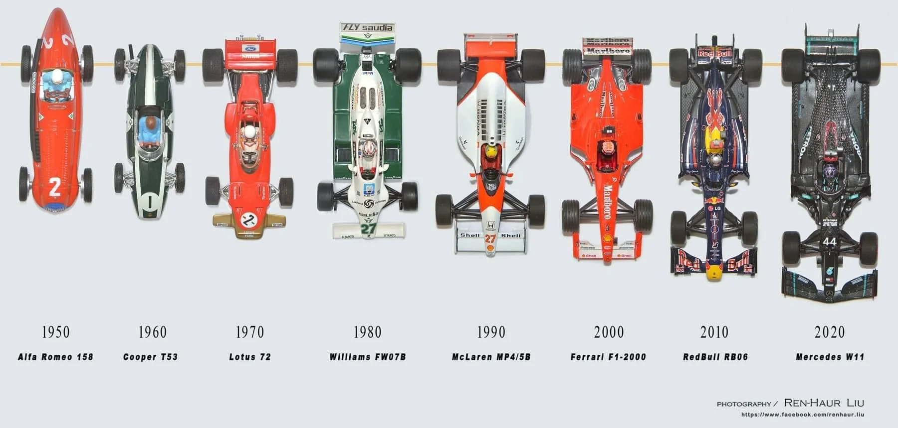
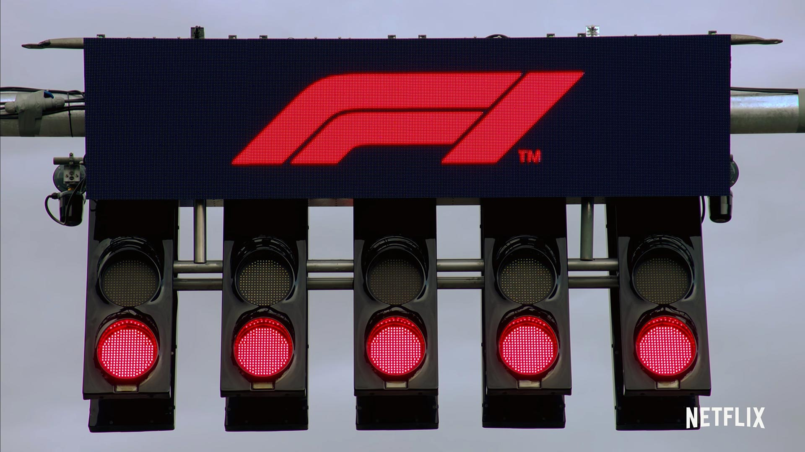

Was ist Formel 1?
Formel L1VE
Die Formel 1 (oft auch mit F1 abgekürzt) ist eine vom Automobil-Dachverband Fédération Internationale de l’Automobile (FIA) autorisierte Formelserie.
Der volle Name der Formel 1 ist:"FIA Formula One World Championship" und sie ist die höchstrangige von der FIA veranstaltete Rennserie des Formelsports.

Die Formel 1 hieß bis 1980 Automobil-Weltmeisterschaft. Fahrer- und Konstrukteursweltmeisterschaft werden parallel ermittelt.
Im deutschsprachigen Raum wurde Training und Rennen bis 2020 von "RTL" komplett live übertragen.
Seit 2021 liegen die Rechte für die werbefreie Übertragung der Rennen bei
"Sky Deutschland"
Um diese zu schauen, ist ein Abonement notwendig.
"RTL" überträgt leider nur noch ein paar Rennen mit Werbeeinblendungen.
Geschichte der Formel 1:
- direkte Nachfolgerin der früheren Internationalen Grand-Prix-Formel
- ab 1948 Übergang in Formel 1
- Formel-1-Weltmeisterschaft seit 1950 jährlich ausgetragen, besteht derzeit aus 24 Einzelrennen (Grand Prix)
- Grands Prix organisiert von lokalen Organisationen
Aufbau eines Grand Prix:
- Freitag zwei freie Trainingseinheiten.
- Samstag drittes Freies Training, dauer 1h, dann 1h Qualifying
- erst Einführungsrunde, dann Rennbeginn durch spezielle Ampel

Boxenstops:
- regulär 18 Mechaniker, vor 2010 20
Erfolgreichste Fahrer Michael Schumacher und Lewis Hamilton